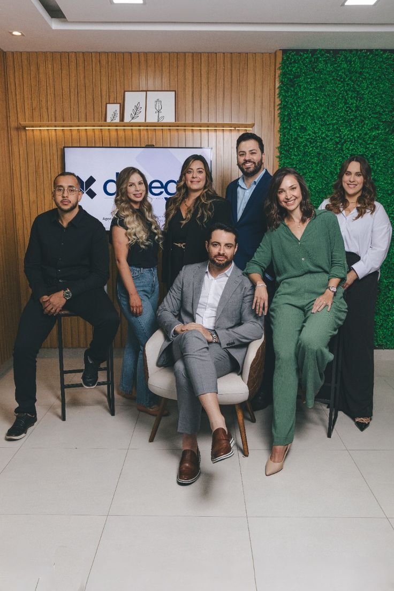
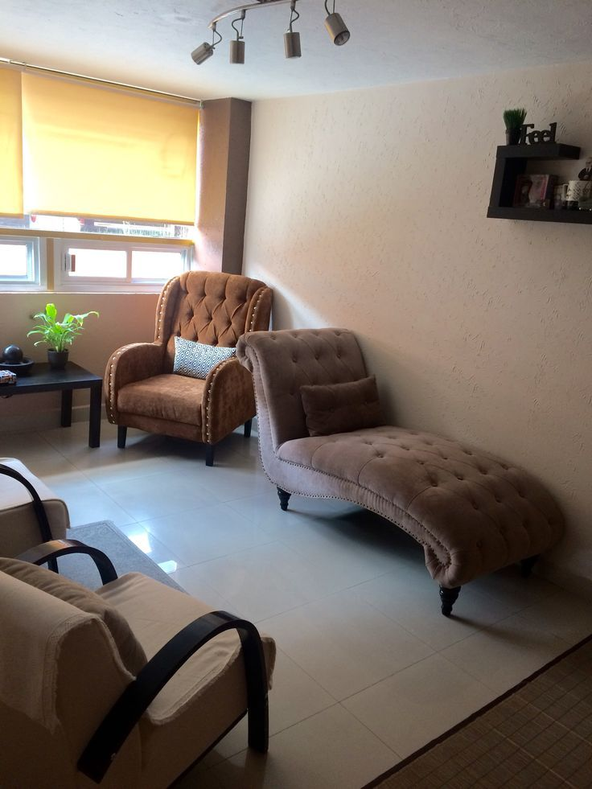
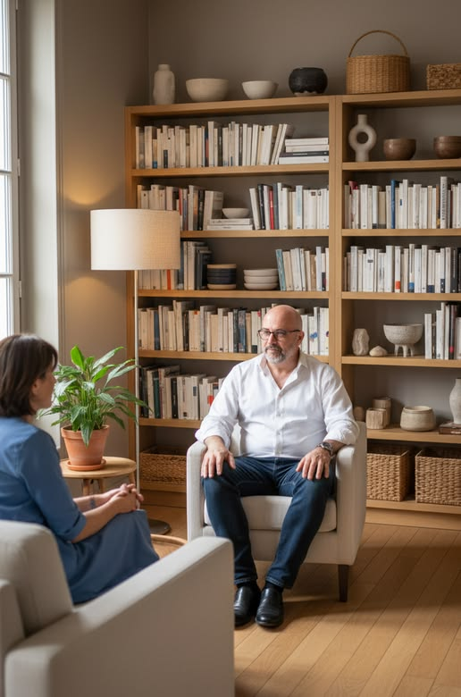
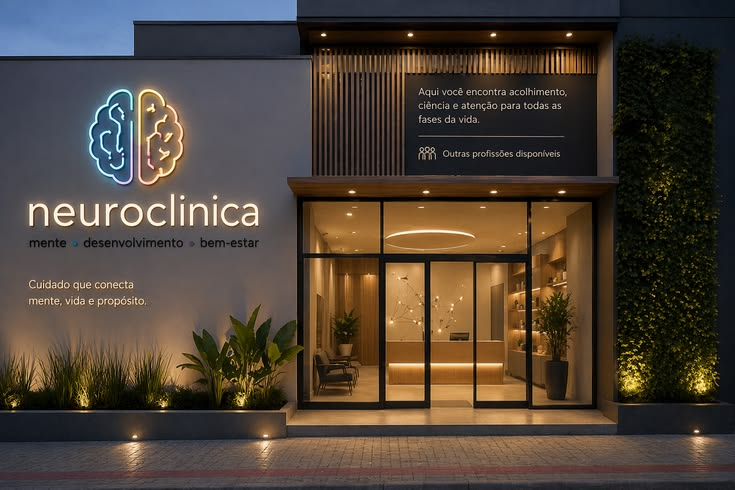

Gabriel Rodrigues
Psicólogo · CRP 00/00000
Atuação em psicoterapia para adultos, com foco em ansiedade, autoconhecimento e momentos de transição.
Psicologia · Neuropsicologia · Desenvolvimento humano
Um espaço de escuta, cuidado e desenvolvimento humano, onde diferentes especialidades trabalham juntas para compreender cada pessoa de forma única.
Mais que uma clínica
A saúde mental faz parte de todas as áreas da nossa vida. Na Neuroclínica, reunimos profissionais de diferentes especialidades para oferecer um cuidado individualizado, respeitando a história, o momento e as necessidades de cada pessoa.
Nosso trabalho une conhecimento científico, experiência profissional e, principalmente, escuta — porque antes de qualquer diagnóstico, avaliação ou tratamento, existe uma pessoa.
Cada história merece ser compreendida sem julgamentos.
Nossas práticas são baseadas em conhecimento científico e atualização profissional.
Cada pessoa possui uma história, necessidades e objetivos diferentes.
Nosso objetivo é oferecer um acompanhamento responsável e humanizado.
Conheça nossa equipe

Psicólogo · CRP 00/00000
Atuação em psicoterapia para adultos, com foco em ansiedade, autoconhecimento e momentos de transição.
Neuropsicólogo · CRP 00/00000
Atuação em avaliação neuropsicológica e acompanhamento de aspectos cognitivos e comportamentais.
Novos profissionais serão apresentados aqui à medida que se juntam à Neuroclínica.
Especialidades
Atendimento individual para adultos, adolescentes e idosos.
Avaliação e acompanhamento de aspectos cognitivos, emocionais e comportamentais.
Apoio para escolhas acadêmicas, profissionais e momentos de transição.
Espaço de diálogo, compreensão e fortalecimento das relações.
Ciência
Como funciona
Envie uma mensagem pelo WhatsApp ou formulário.
Nossa equipe identifica qual profissional ou especialidade pode ser mais adequada.
Encontramos o melhor horário disponível.
O profissional realiza uma avaliação inicial e define, junto com você, os próximos passos.
Psicologia na prática
Reunimos aqui algumas das dúvidas mais comuns de quem está considerando procurar ajuda pela primeira vez.
É um processo de conversa estruturada entre você e um profissional, em que se busca compreender melhor sentimentos, pensamentos e comportamentos, com sigilo e sem julgamentos.
Não é necessário esperar chegar ao limite. Mudanças de vida, inquietações do dia a dia ou apenas o desejo de se conhecer melhor já são motivos válidos para começar.
O psicólogo atua principalmente com processos emocionais e comportamentais. O neuropsicólogo é especializado em avaliar como funções como memória, atenção e raciocínio se relacionam com o funcionamento do cérebro.
É um momento de conhecimento mútuo. O profissional escuta sua história e suas expectativas, e juntos vocês definem como o acompanhamento pode seguir.
Não existe uma duração universal. Cada processo respeita o ritmo e os objetivos da pessoa que está sendo acompanhada.
O trabalho psicológico não é sobre receber respostas prontas, e sim sobre construir, com apoio profissional, mais clareza para as suas próprias decisões.
Conteúdos para cuidar da mente


O cuidado que faz diferença
Estamos reunindo depoimentos de pacientes que autorizaram o compartilhamento de suas experiências. Em breve, essa seção contará essas histórias.
Diferenciais
Diferentes profissionais reunidos em um mesmo espaço.
Cada pessoa é recebida de forma individualizada.
Um espaço pensado para proporcionar conforto e privacidade.
Profissionais comprometidos com conhecimento e atualização constante.
Quando necessário, diferentes profissionais atuam de forma complementar.
Contato
Preencha o formulário ou fale diretamente pelo WhatsApp. Retornamos o mais breve possível.

Se você está passando por um momento difícil, buscando compreender melhor suas emoções ou simplesmente deseja investir no seu desenvolvimento, podemos ajudar.